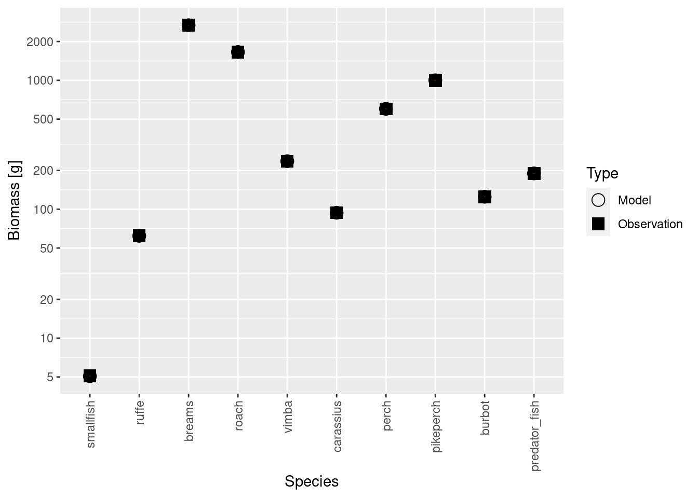

We have a basic model with two background resources. This model produces somewhat reasonable diets, reasonable growth and we also managed to fit the model to the observed average biomasses. But there are more things we want to tune and match, while still staying in a steady state, with constant reproduction and resource levels. We have average catch data and size distributions of catches. We also want predators to eat more fish. So let’s explore how we can tune our model further.
A large fraction of tuning can be done using a tuneParams() R Shiny gadget that is integrated into mizerExperimental. But because we are using a multiple resource add-on, we will need to install a different branch of mizerExperimental, which will include an updated tuneParams() R Shiny gadget that incorporates multiple resources. This is still work in progress, so please be patient if you find bugs or some other annoying features (please report them, so we can keep improving the tools). To install a specific branch (in our case tuneMR branch) of a package located on GitHub we need to indicate it in the ref= argument. You might need to restart your R session for this to work. Also, remember that next time, if you want to use the main branch of mizerExperimental (without multiple resources) you will need to reinstall it, but without the ref= parameter.
* checking for file ‘/tmp/RtmpzQPjS2/remotesfd7c49453a87/sizespectrum-mizerExperimental-0b82838/DESCRIPTION’ ... OK
* preparing ‘mizerExperimental’:
* checking DESCRIPTION meta-information ... OK
* checking for LF line-endings in source and make files and shell scripts
* checking for empty or unneeded directories
* building ‘mizerExperimental_2.3.1.7777.tar.gz’
Now let’s load our latest model with two background resources. If you found your own species parameters for roach (and perhaps for breams) and used those parameters in tutorial 2 and 3, you will load your own model version.
We will also load data on the size distribution of catches. Such data is often collected in data-poor fisheries, so it will be useful to see how we can use such data for model calibration. This specific dataset is not really from commercial fisheries in Curonian lagoon, but from some years of scientific surveys, where only commercial mesh sizes were used.
You can see that for each species we have numbers of individuals observed in 2cm wide length bins (the dl column indicates the width of each bin).
Remember that in the species parameter data frame we included a column of yield_observed that gives the average annual commercial catches over a certain time period. These are not accurate, but it does not matter here because we use them for illustration purposes only.
The observed yield is some orders of magnitude larger than model yield. This is because our yield and biomasses are in different units or scales. The biomasses we used for calibration are relative biomasses from scientific surveys. It is hard to know how exactly to scale them to area, so we just used the relative values. The yield, on the other hand, is the reported commercial yield for the entire model area. So naturally they are on very different scales. What we need to do now is to rescale our biomasses so they are in approximately the same units.
Let’s calibrate the yield, like we calibrated biomasses. If you didn’t have the biomasses for your system, but know the yield and fishing mortalities, this is how you would calibrate your model.
Now the yields are in a similar scale, and this has rescaled abundances of all species by the same factor (like one would calibrate a device). We now still need to rescale our biomass observations by the same factor so convert them from their relative scale to the same absolute scale as the yields.
# Find the scaling factor by dividing abundances of calibrated and initial model # (We can use any species and any size, because they all were scaled by the # same factor.)scaling_factor<-initialN(cur_model)[1, 1]/initialN(cur_model_coarse)[1, 1]scaling_factor
[1] 2680.075
# Rescale the observed biomass values by that factorspecies_params(cur_model)$biomass_observed<-species_params(cur_model)$biomass_observed*scaling_factor
Now that we have scaled both the model biomasses and the observed biomasses by the same factor, they are of course again in agreement:
Now we want to know whether our modelled and observed catch size distributions agree. The plotYieldVsSize() function lets us see how well they match:
plotYieldVsSize(cur_model, species ="breams", catch =catch_lengths, x_var ="Length")

They don’t match very well at all. The modelled catch has a peak earlier than the observed catch. Clearly our guess that for each species the selectivity reaches 50% at 30cm length is incorrect. There are R tools to estimate selectivity curves, but we will just assume that 50% selectivity is at 35cm (inflection point of the logistic selectivity curve) and 25% selectivity is at 32 cm (value, defining steepness of the curve). We will adjust these values using gear_params() function.
Let us look at the current gear parameter data frame first.
# Let's look at our gear params first gear_params(cur_model)
We notice that the row names are made up of the species name and the gear name, separated by a comma. So we can change the selectivity parameters specifically for breams with
# Modify the l50 and l25 for breamsgear_params(cur_model)["breams, Main", "l50"]<-35gear_params(cur_model)["breams, Main", "l25"]<-32#check the match between model and observed catch size distributionsplotYieldVsSize(cur_model, species ="breams", catch =catch_lengths, x_var ="Length")
This looks much better. But now that we have changed fishing selectivity we need to find a new steady state. It is important to run steady() frequently, while making small changes to the model parameters. If we accumulate too many changes, finding a new steady state might be harder.
cur_model<-steady(cur_model)
Convergence was achieved in 10.5 years.
Note that even this small change in the selectivity of the gear has increased the biomass of breams, as would be expected.
This illustrates a general point: as we change parameters to get one aspect of the model to agree with observations, other aspects will stop to agree.
Now you can look at the catch size distributions for some other species.
Of course, the size distributions of catches will depends on fishing mortality, on correct representation of species growth and predation mortality. We can see that setting the same selectivity for ruffe was not correct, because it is a small bodied species and it would not be caught with the same gear. This and many other aspects we can explore further using the R Shiny gadget, which we call with the tuneParams() function. If you have catch length data, make sure to pass it into the tuneParams() function via the catch argument.
Note how we assign the return value from the tuneParams() function back to the cur_model variable. That way we capture the changes that we make in the gadget.
Video in preparation.
The tuneParams() gadget has a lot of useful panels and allows you to play with the parameters interactively. But most of these plots are also available as separate plot functions in mizer or in mizerExperimental.
Exercise: Use tuneParams gadget to refine your model
In our video we only started refining the model by adjusting some parameters for a few species. We ask you to do something similar but for all species in order to refine the model you have built in the previous tutorial. We are very interested in seeing the model that you come up with. We will collect the models from all participants to give us an ensemble of models to use next week. Please use the worksheet “worksheet-4-refine-model.Rmd” to commit your model.